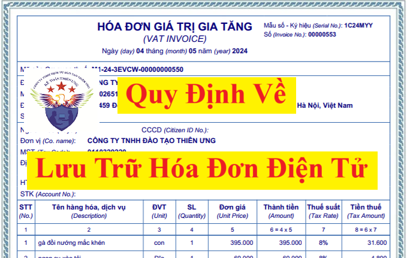

Quy định về lưu trữ hóa đơn điện tử, chứng từ điện tử theo Nghị định 123/2020/NĐ-CP và Luật kế toán
Theo khoản 1, khoản 2 điều 6 của Nghị định 123/2020/NĐ-CP thì:
1. Hóa đơn, chứng từ được bảo quản, lưu trữ đảm bảo:
a) Tính an toàn, bảo mật, toàn vẹn, đầy đủ, không bị thay đổi, sai lệch trong suốt thời gian lưu trữ;
b) Lưu trữ đúng và đủ thời hạn theo quy định của pháp luật kế toán.
2. Hóa đơn điện tử, chứng từ điện tử được bảo quản, lưu trữ bằng phương tiện điện tử.
Cơ quan, tổ chức, cá nhân được quyền lựa chọn và áp dụng hình thức bảo quản, lưu trữ hóa đơn điện tử, chứng từ điện tử phù hợp với đặc thù hoạt động và khả năng ứng dụng công nghệ. Hóa đơn điện tử, chứng từ điện tử phải sẵn sàng in được ra giấy hoặc tra cứu được khi có yêu cầu.
Theo khoản 6, điều 18 của Luật kế toán số 88/2015/QH13 thì:
Điều 18. Lập và lưu trữ chứng từ kế toán
6. Chứng từ kế toán được lập dưới dạng chứng từ điện tử phải tuân theo quy định tại Điều 17, khoản 1 và khoản 2 Điều này. Chứng từ điện tử được in ra giấy và lưu trữ theo quy định tại Điều 41 của Luật này. Trường hợp không in ra giấy mà thực hiện lưu trữ trên các phương tiện điện tử thì phải bảo đảm an toàn, bảo mật thông tin dữ liệu và phải bảo đảm tra cứu được trong thời hạn lưu trữ.
Theo điều 20 của Luật kế toán số 88/2015/QH13 thì:
Điều 20. Hóa đơn
1. Hóa đơn là chứng từ kế toán do tổ chức, cá nhân bán hàng, cung cấp dịch vụ lập, ghi nhận thông tin bán hàng, cung cấp dịch vụ theo quy định của pháp luật.
2. Nội dung, hình thức hóa đơn, trình tự lập, quản lý và sử dụng hoá đơn thực hiện theo quy định của pháp luật về thuế.

Theo điều 41 của Luật kế toán số 88/2015/QH13 thì:
Điều 41. Bảo quản, lưu trữ tài liệu kế toán
1. Tài liệu kế toán phải được đơn vị kế toán bảo quản đầy đủ, an toàn trong quá trình sử dụng và lưu trữ.
2. Trường hợp tài liệu kế toán bị tạm giữ, bị tịch thu thì phải có biên bản kèm theo bản sao chụp tài liệu kế toán đó; nếu tài liệu kế toán bị mất hoặc bị hủy hoại thì phải có biên bản kèm theo bản sao chụp tài liệu hoặc bản xác nhận.
3. Tài liệu kế toán phải đưa vào lưu trữ trong thời hạn 12 tháng, kể từ ngày kết thúc kỳ kế toán năm hoặc kết thúc công việc kế toán.
4. Người đại diện theo pháp luật của đơn vị kế toán chịu trách nhiệm tổ chức bảo quản, lưu trữ tài liệu kế toán.
5. Tài liệu kế toán phải được lưu trữ theo thời hạn sau đây:
a) Ít nhất là 05 năm đối với tài liệu kế toán dùng cho quản lý, điều hành của đơn vị kế toán, gồm cả chứng từ kế toán không sử dụng trực tiếp để ghi sổ kế toán và lập báo cáo tài chính;
b) Ít nhất là 10 năm đối với chứng từ kế toán sử dụng trực tiếp để ghi sổ kế toán và lập báo cáo tài chính, sổ kế toán và báo cáo tài chính năm, trừ trường hợp pháp luật có quy định khác;
c) Lưu trữ vĩnh viễn đối với tài liệu kế toán có tính sử liệu, có ý nghĩa quan trọng về kinh tế, an ninh, quốc phòng.
6. Chính phủ quy định cụ thể từng loại tài liệu kế toán phải lưu trữ, thời hạn lưu trữ, thời điểm tính thời hạn lưu trữ quy định tại khoản 5 Điều này, nơi lưu trữ và thủ tục tiêu hủy tài liệu kế toán lưu trữ.
Vì hóa đơn điện tử là chứng từ kế toán sử dụng trực tiếp để ghi sổ kế toán và lập báo cáo tài chính. Nên thời hạn lưu trữ của hóa đơn điện tử là 10 năm.
Và hiện nay, chính phủ đang quy định chi tiết về lưu trữ chứng từ tại Nghị định 174/2016/NĐ-CP hướng dẫn Luật kế toán như sau:
Điều 12. Tài liệu kế toán phải lưu trữ tối thiểu 5 năm
1. Chứng từ kế toán không sử dụng trực tiếp để ghi sổ kế toán và lập báo cáo tài chính như phiếu thu, phiếu chi, phiếu nhập kho, phiếu xuất kho không lưu trong tập tài liệu kế toán của bộ phận kế toán.
2. Tài liệu kế toán dùng cho quản lý, điều hành của đơn vị kế toán không trực tiếp ghi sổ kế toán và lập báo cáo tài chính.
3. Trường hợp tài liệu kế toán quy định tại khoản 1, khoản 2 Điều này mà pháp luật khác quy định phải lưu trữ trên 5 năm thì thực hiện lưu trữ theo quy định đó.
Điều 13. Tài liệu kế toán phải lưu trữ tối thiểu 10 năm
1. Chứng từ kế toán sử dụng trực tiếp để ghi sổ kế toán và lập báo cáo tài chính, các bảng kê, bảng tổng hợp chi tiết, các sổ kế toán chi tiết, các sổ kế toán tổng hợp, báo cáo tài chính tháng, quý, năm của đơn vị kế toán, báo cáo quyết toán, báo cáo tự kiểm tra kế toán, biên bản tiêu hủy tài liệu kế toán lưu trữ và tài liệu khác sử dụng trực tiếp để ghi sổ kế toán và lập báo cáo tài chính.
2. Tài liệu kế toán liên quan đến thanh lý, nhượng bán tài sản cố định; báo cáo kết quả kiểm kê và đánh giá tài sản.
3. Tài liệu kế toán của đơn vị chủ đầu tư, bao gồm tài liệu kế toán của các kỳ kế toán năm và tài liệu kế toán về báo cáo quyết toán dự án hoàn thành thuộc nhóm B, C.
4. Tài liệu kế toán liên quan đến thành lập, chia, tách, hợp nhất, sáp nhập, chuyển đổi hình thức sở hữu, chuyển đổi loại hình doanh nghiệp hoặc chuyển đổi đơn vị, giải thể, phá sản, chấm dứt hoạt động, kết thúc dự án.
5. Tài liệu liên quan tại đơn vị như hồ sơ kiểm toán của Kiểm toán Nhà nước, hồ sơ thanh tra, kiểm tra, giám sát của cơ quan nhà nước có thẩm quyền hoặc hồ sơ của các tổ chức kiểm toán độc lập.
6. Các tài liệu khác không được quy định tại Điều 12 và Điều 14 Nghị định này.
7. Trường hợp tài liệu kế toán quy định tại các khoản 1, 2, 3, 4, 5, 6 Điều này mà pháp luật khác quy định phải lưu trữ trên 10 năm thì thực hiện lưu trữ theo quy định đó.
Điều 14. Tài liệu kế toán phải lưu trữ vĩnh viễn
1. Đối với đơn vị kế toán trong lĩnh vực kế toán nhà nước, tài liệu kế toán phải lưu trữ vĩnh viễn gồm Báo cáo tổng quyết toán ngân sách nhà nước năm đã được Quốc hội phê chuẩn, Báo cáo quyết toán ngân sách địa phương đã được Hội đồng nhân dân các cấp phê chuẩn; Hồ sơ, báo cáo quyết toán dự án hoàn thành thuộc nhóm A, dự án quan trọng quốc gia; Tài liệu kế toán khác có tính sử liệu, có ý nghĩa quan trọng về kinh tế, an ninh, quốc phòng.
Việc xác định tài liệu kế toán khác phải lưu trữ vĩnh viễn do người đại diện theo pháp luật của đơn vị kế toán, do ngành hoặc địa phương quyết định trên cơ sở xác định tính chất sử liệu, ý nghĩa quan trọng về kinh tế, an ninh, quốc phòng.
2. Đối với hoạt động kinh doanh, tài liệu kế toán phải lưu trữ vĩnh viễn gồm các tài liệu kế toán có tính sử liệu, có ý nghĩa quan trọng về kinh tế, an ninh, quốc phòng.
Việc xác định tài liệu kế toán phải lưu trữ vĩnh viễn do người đứng đầu hoặc người đại diện theo pháp luật của đơn vị kế toán quyết định căn cứ vào tính sử liệu và ý nghĩa lâu dài của tài liệu, thông tin để quyết định cho từng trường hợp cụ thể và giao cho bộ phận kế toán hoặc bộ phận khác lưu trữ dưới hình thức bản gốc hoặc hình thức khác.
3. Thời hạn lưu trữ vĩnh viễn phải là thời hạn lưu trữ trên 10 năm cho đến khi tài liệu kế toán bị hủy hoại tự nhiên.
Điều 15. Thời điểm tính thời hạn lưu trữ tài liệu kế toán
Thời điểm tính thời hạn lưu trữ tài liệu kế toán được quy định như sau:
1. Thời điểm tính thời hạn lưu trữ đối với tài liệu kế toán quy định tại Điều 12 khoản 1, 2, 7 Điều 13 và Điều 14 của Nghị định này được tính từ ngày kết thúc kỳ kế toán năm.
2. Thời điểm tính thời hạn lưu trữ đối với các tài liệu kế toán quy định tại khoản 3 Điều 13 của Nghị định này được tính từ ngày Báo cáo quyết toán dự án hoàn thành được duyệt.
3. Thời điểm tính thời hạn lưu trữ đối với tài liệu kế toán liên quan đến thành lập đơn vị tính từ ngày thành lập; tài liệu kế toán liên quan đến chia, tách, hợp nhất, sáp nhập, chuyển đổi hình thức sở hữu, chuyển đổi loại hình được tính từ ngày chia, tách, hợp nhất, sáp nhập, chuyển đổi hình thức sở hữu, chuyển đổi loại hình; tài liệu kế toán liên quan đến giải thể, phá sản, chấm dứt hoạt động, kết thúc dự án được tính từ ngày hoàn thành thủ tục giải thể, phá sản, chấm dứt hoạt động, kết thúc dự án; tài liệu kế toán liên quan đến hồ sơ kiểm toán, thanh tra, kiểm tra của cơ quan có thẩm quyền tính từ ngày có báo cáo kiểm toán hoặc kết luận thanh tra, kiểm tra.
Theo điều 3 của Luật kế toán số 88/2015/QH13 thì:
Tài liệu kế toán là chứng từ kế toán, sổ kế toán, báo cáo tài chính, báo cáo kế toán quản trị, báo cáo kiểm toán, báo cáo kiểm tra kế toán và tài liệu khác có liên quan đến kế toán.
Theo điều 3 của Nghị định 123/2020/NĐ-CP thì:
1. Hóa đơn là chứng từ kế toán do tổ chức, cá nhân bán hàng hóa, cung cấp dịch vụ lập, ghi nhận thông tin bán hàng hóa, cung cấp dịch vụ. Hóa đơn được thể hiện theo hình thức hóa đơn điện tử hoặc hóa đơn do cơ quan thuế đặt in.
2. Hóa đơn điện tử là hóa đơn có mã hoặc không có mã của cơ quan thuế được thể hiện ở dạng dữ liệu điện tử do tổ chức, cá nhân bán hàng hóa, cung cấp dịch vụ lập bằng phương tiện điện tử để ghi nhận thông tin bán hàng hóa, cung cấp dịch vụ theo quy định của pháp luật về kế toán, pháp luật về thuế, bao gồm cả trường hợp hóa đơn được khởi tạo từ máy tính tiền có kết nối chuyển dữ liệu điện tử với cơ quan thuế, trong đó:
a) Hóa đơn điện tử có mã của cơ quan thuế là hóa đơn điện tử được cơ quan thuế cấp mã trước khi tổ chức, cá nhân bán hàng hóa, cung cấp dịch vụ gửi cho người mua.
Mã của cơ quan thuế trên hóa đơn điện tử bao gồm số giao dịch là một dãy số duy nhất do hệ thống của cơ quan thuế tạo ra và một chuỗi ký tự được cơ quan thuế mã hóa dựa trên thông tin của người bán lập trên hóa đơn.
b) Hóa đơn điện tử không có mã của cơ quan thuế là hóa đơn điện tử do tổ chức bán hàng hóa, cung cấp dịch vụ gửi cho người mua không có mã của cơ quan thuế.
Khoản này được bổ sung bởi Điểm a Khoản 2 Điều 1 Nghị định 70/2025/NĐ-CP có hiệu lực từ ngày 01/06/2025 như sau:
c) Hóa đơn điện tử khởi tạo từ máy tính tiền có kết nối chuyển dữ liệu điện tử với cơ quan thuế (sau đây gọi là hóa đơn điện tử khởi tạo từ máy tính tiền) là hóa đơn có mã của cơ quan thuế hoặc dữ liệu điện tử để người mua có thể truy xuất, kê khai thông tin hóa đơn điện tử khởi tạo từ máy tính tiền do tổ chức, cá nhân bán hàng hóa, cung cấp dịch vụ lập từ hệ thống tính tiền, dữ liệu được chuyển đến cơ quan thuế theo định dạng được quy định tại Điều 12 Nghị định này.
d) Máy tính tiền là hệ thống tính tiền bao gồm một thiết bị điện tử đồng bộ hoặc một hệ thống gồm nhiều thiết bị điện tử được kết hợp với nhau bằng giải pháp công nghệ thông tin có chức năng chung như: tính tiền, lưu trữ các giao dịch bán hàng, số liệu bán hàng.
3. Hóa đơn do cơ quan thuế đặt in là hóa đơn được thể hiện dưới dạng giấy do cơ quan thuế đặt in để bán cho tổ chức, cá nhân thuộc đối tượng và trường hợp được mua hóa đơn của cơ quan thuế theo quy định tại Điều 23 Nghị định 123/2020/NĐ-CP để sử dụng khi bán hàng hóa, cung cấp dịch vụ.
4. Chứng từ là tài liệu dùng để ghi nhận thông tin về các khoản thuế khấu trừ, các khoản thu thuế, phí và lệ phí thuộc ngân sách nhà nước theo quy định của pháp luật quản lý thuế. Chứng từ theo quy định tại Nghị định 123/2020/NĐ-CP bao gồm chứng từ khấu trừ thuế thu nhập cá nhân, biên lai thuế, phí, lệ phí được thể hiện theo hình thức điện tử hoặc đặt in, tự in.
5. Chứng từ điện tử bao gồm các loại chứng từ, biên lai theo khoản 4 Điều này được thể hiện ở dạng dữ liệu điện tử do tổ chức, cá nhân có trách nhiệm khấu trừ thuế cấp cho người nộp thuế hoặc do tổ chức thu thuế, phí, lệ phí cấp cho người nộp bằng phương tiện điện tử theo quy định của pháp luật phí, lệ phí, pháp luật thuế.
Khoản này được sửa đổi bởi Điểm b Khoản 2 Điều 1 Nghị định 70/2025/NĐ-CP có hiệu lực từ ngày 01/06/2025 như sau:
b) Sửa đổi, bổ sung khoản 5 như sau:
“5. Chứng từ điện tử được thể hiện ở dạng dữ liệu điện tử do tổ chức, cá nhân có trách nhiệm khấu trừ thuế cấp cho người nộp thuế hoặc do tổ chức thu thuế, phí, lệ phí cấp cho người nộp bằng phương tiện điện tử theo quy định của pháp luật phí, lệ phí, pháp luật thuế.”
6. Chứng từ đặt in, tự in bao gồm các loại chứng từ, biên lai theo khoản 4 Điều này được thể hiện ở dạng giấy do cơ quan thuế, tổ chức thu thuế, phí, lệ phí đặt in theo mẫu để sử dụng hoặc tự in trên các thiết bị tin học, máy tính tiền hoặc các thiết bị khác khi khấu trừ thuế, khi thu thuế, phí, lệ phí theo quy định của pháp luật phí, lệ phí, pháp luật thuế.
Theo 17 của Luật kế toán số 88/2015/QH13 thì:
Điều 17. Chứng từ điện tử
1. Chứng từ điện tử được coi là chứng từ kế toán khi có các nội dung quy định tại Điều 16 của Luật này và được thể hiện dưới dạng dữ liệu điện tử, được mã hóa mà không bị thay đổi trong quá trình truyền qua mạng máy tính, mạng viễn thông hoặc trên vật mang tin như băng từ, đĩa từ, các loại thẻ thanh toán.
2. Chứng từ điện tử phải bảo đảm tính bảo mật và bảo toàn dữ liệu, thông tin trong quá trình sử dụng và lưu trữ; phải được quản lý, kiểm tra chống các hình thức lợi dụng khai thác, xâm nhập, sao chép, đánh cắp hoặc sử dụng chứng từ điện tử không đúng quy định. Chứng từ điện tử được quản lý như tài liệu kế toán ở dạng nguyên bản mà nó được tạo ra, gửi đi hoặc nhận nhưng phải có đủ thiết bị phù hợp để sử dụng.
3. Khi chứng từ bằng giấy được chuyển thành chứng từ điện tử để giao dịch, thanh toán hoặc ngược lại thì chứng từ điện tử có giá trị để thực hiện nghiệp vụ kinh tế, tài chính đó, chứng từ bằng giấy chỉ có giá trị lưu giữ để ghi sổ, theo dõi và kiểm tra, không có hiệu lực để giao dịch, thanh toán.